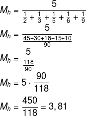

Média aritmética é a soma de vários valores e dividido pelo total deles. Ou seja, o resultado dessa divisão equivale a um valor médio entre todos os valores.
Onde,
Ms: média aritmética simples
x1, x2, x3,...,xn: valores dos dados
n: número de dados.
Sabendo que as notas de um aluno foram: 8,2; 7,8; 10,0; 9,5; 6,7, qual a média que ele obteve no curso? Logo:
A média ponderada leva o peso de cada informação em consideração no cálculo, seja ele um valor atribuído, seja uma quantidade.
Na média simples, os valores são somados e divididos pela quantidade de termos adicionados.
A média ponderada é calculada por meio do somatório das multiplicações entre valores e pesos divididos pelo somatório dos pesos.
Vamos, por meio de exemplos, demonstrar os cálculos envolvendo a média ponderada.
Onde,
Mp: Média aritmética ponderada
p1, p2,..., pn: pesos
x1, x2,...,xn: valores dos dados
Considerando as notas e os respectivos pesos de cada uma delas, indique qual a média que o aluno obteve no curso.
Biologia. Nota: 8,2. Peso: 3
Filosofia. Nota: 10,0. Peso: 2
Física. Nota: 9,5. Peso: 4
Geografia. Nota: 7,8. Peso: 2
História. Nota: 10,0. Peso: 2
Língua Portuguesa. Nota: 9,5. Peso: 3
Matemática. Nota: 6,7. Peso: 4
A média geométrica é definida, para números positivos, como a raiz n-ésima do produto de n elementos de um conjunto de dados.
Assim como a média aritmética, a média geométrica também é uma medida de tendência central.
É usada com mais frequência em dados que apresentam valores que aumentam de forma sucessiva.
Onde,
MG: média geométrica
n: número de elementos do conjunto de dados
x1, x2, x3, ..., xn: valores dos dados
Qual o valor da média geométrica entre os números 3, 8 e 9?
Como temos 3 valores, iremos calcular a raiz cúbica do produto.
O estudo da média harmônica (incluindo-se as médias geométrica, aritmética simples ou aritmética ponderada) é,
para a estatística, uma ferramenta importante, pois é com base nela que conseguimos representar um conjunto de dados por um único valor.
Onde,
Mh: média harmônica
n: quantidade de elementos
Dado um conjunto A (2, 3, 5, 6, 9), como ele possui cinco elementos, a média harmônica de A é calculada por:
@Copyright Nícolas Ribeiro 2020
Website desenvolvido na disciplina de CPW do curso de Ciência da Computação.